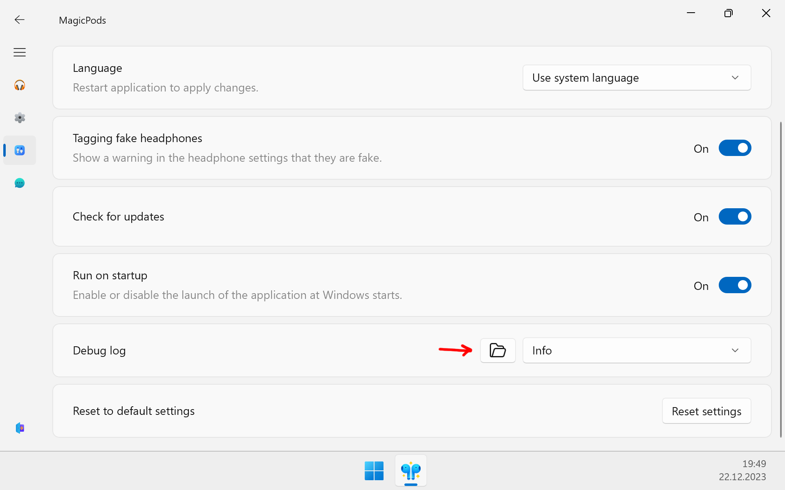

Report issue
Please see the Resolving known issues section, your problem may have already been resolved.
Self-diagnostics⚓︎
Most of the problems are related to incorrectly installed Bluetooth driver or corrupted system files. You can easily solve them yourself.
Update Bluetooth driver⚓︎
- Try updating the Bluetooth driver manually. Download the Bluetooth driver from the Bluetooth driver manufacturer's website and install it.
- Restart the computer
Check system files⚓︎
- Perform file verification according to Microsoft's official instructions Using System File Checker in Windows
- Restart the computer
Report issue⚓︎
Describe in detail the problem you encountered and the steps to reproduce it. Be sure to upload log files. If possible, add a screenshot or recording of the screen with the problem.
Upload problem description, log files, screenshots and videos to any of those resources:
-
Discord
Join our Discord community. Create a new post in the section Issue and attach information that you prepared.
-
GitHub
Login or Register on github.com if you don't have an account. Open a new issue on MagicPods-Windows and attach information that you prepared.
-
Email
Attach information that you prepared and send mail to MagicPods@outlook.com.
How to get log files⚓︎
- Open the MagicPods, go to the
Preferencespage - In the
Debug logoption click to folder icon - Add all text files in the opened folder to the ZIP archive
